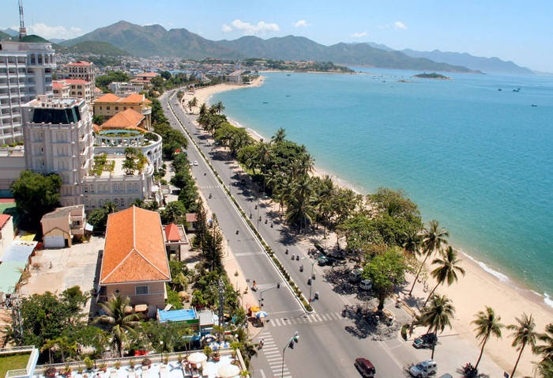
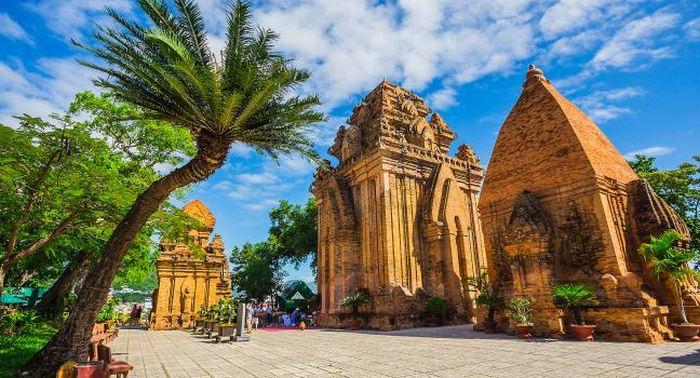
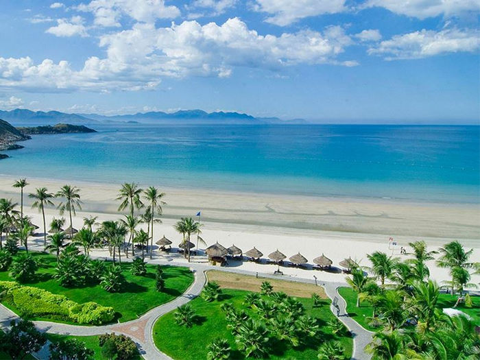
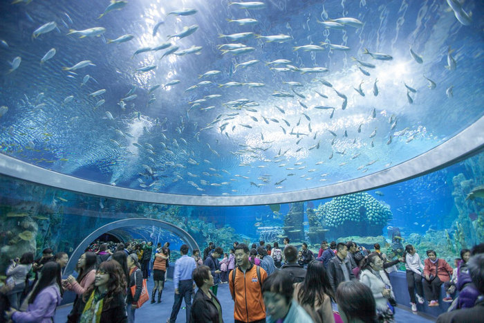
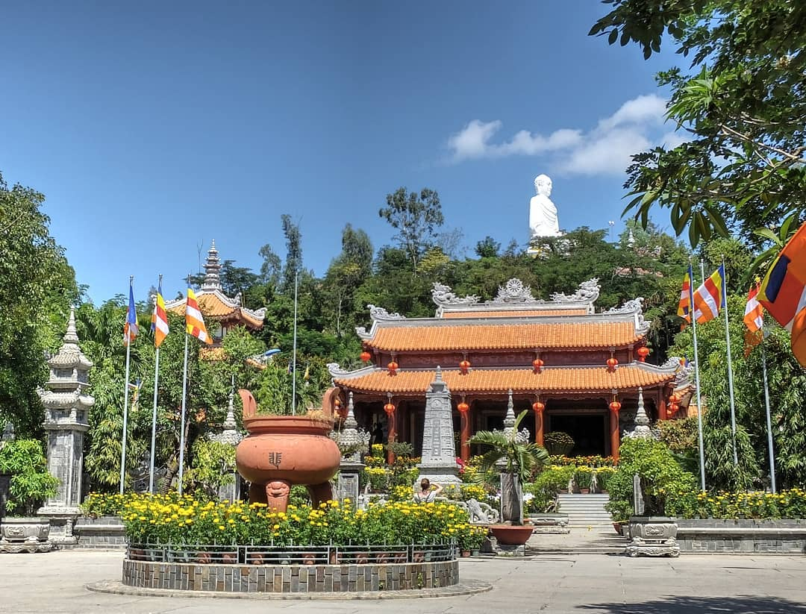

Nha Trang là tuyệt phẩm của tạo hóa, nơi có một trong 29 vịnh đẹp nhất thế giới và được thiên nhiên ưu ái ban tặng nhiều thắng cảnh, đặc sản độc đáo. Vậy Nha Trang ở đâu? Du khách đến Nha Trang bằng cách nào và khám phá những gì? Tất cả sẽ có trong nội dung dưới đây.

“Nha Trang thuộc tỉnh nào?” là câu hỏi quen thuộc của nhiều du khách khi nghe đến tên thành phố nổi tiếng này. Xét về địa lý, thành phố biển Nha Trang
tọa lạc ở vị trí trung tâm và là thủ phủ của tỉnh Khánh Hòa: phía Bắc giáp với thị xã Ninh Hòa, phía Nam giáp huyện Cam Lâm, phía Tây giáp huyện Diên Khánh,
phía Đông giáp biển Đông. Nha Trang được mệnh danh là “hòn ngọc của biển Đông” nhờ sở hữu những “món quà” quý giá mà thiên nhiên ban tặng.
Thành phố có vịnh biển Nha Trang được tạp chí Travel and Leisure bình chọn là một trong 29 vịnh đẹp nhất thế giới. Nha Trang còn có hệ thống các đảo lớn nhỏ
vô cùng đa dạng, chứa cả cảnh đẹp trên bờ lẫn dưới nước và vẫn giữ nguyên nét hoang sơ, thô mộc như: Hòn Tre, Hòn Mun, Hòn Tằm, Hòn Đụn, Hòn Miễu, Hòn Hố, Hòn Một...
Hiện nay có một số hãng hàng không nội địa khai thác chuyến bay đến Nha Trang như: Vietjet Air, Vietnam Airlines, Jetstar Pacific và Bamboo Airway. Giá vé máy bay tùy thuộc vào địa điểm xuất phát, thời điểm bay và hạng ghế, dao động trung bình từ 1 - 2 triệu đồng/ vé. Di chuyển bằng máy bay tuy đắt đỏ nhưng đổi lại cực kỳ nhanh chóng. Du khách chỉ mất khoảng 45 phút - 1 tiếng là có thể đến được Nha Trang. Ngoài ra, ngồi trên máy bay, bạn còn có cơ hội được ngắm nhìn vùng biển xinh đẹp này từ trên cao.
Nha Trang có tuyến đường sắt Bắc Nam dài 25km chạy ngang thành phố, dừng tại ga Nha Trang. Du khách đến Nha Trang bằng tàu hỏa vừa an toàn,
vừa tiết kiệm hơn so với đi máy bay.
Các tỉnh có tuyến tàu hỏa đến Nha Trang gồm: Hà Nội, Thanh Hóa, Nam Định, Phủ Lý, Vinh, Ninh Bình, Hà Tĩnh, Quảng Bình, Quảng Trị, Huế, Quảng Nam,
Đà Nẵng, Quảng Ngãi, Bình Định, Phú Yên, Sài Gòn, Đồng Nai, Bình Dương, Bình Thuận, Ninh Thuận.
Thành phố Nha Trang nối với các địa phương khác bằng tuyến quốc lộ 1A chạy dọc ngoại thành theo hướng Bắc Nam. Từ quốc lộ 1A vào đến trung
tâm thành phố thông qua quốc Lộ 1C (khoảng hơn 15km). Ngoài ra Nha Trang còn có đường Nguyễn Tất Thành chạy dài đến sân bay quốc tế Cam Ranh và đường
Võ Nguyên Giáp dẫn đến tuyến quốc lộ 27C nối với thành phố Đà Lạt.
Xe khách liên tỉnh 2 chiều đến và đi ở Nha Trang rất phong phú. Xuất phát từ Hà Nội có nhà xe Hoàng Long, Minh Phú, Tâm Hồng,...
Nếu ở Sài Gòn, bạn có thể lựa chọn xe Quang Hạnh, Phương Trang, Phương Nam,... Tại Đà Nẵng, các nhà xe như Hoàng Long, Cúc Tùng… có phục vụ
chuyến đi đến Nha Trang. Du khách nên chọn dạng xe giường nằm để có thể ngả lưng nghỉ ngơi qua hàng trăm cây số.
Không hổ danh là “phiên bản thiên đường nơi hạ giới”, Nha Trang được thiên nhiên khoản đãi khí hậu ôn hòa, vị trí đắc địa cùng phong cảnh tuyệt sắc. Cùng theo chân chúng tôi khám phá địa điểm du lịch Nha Trang ở đâu nổi tiếng nhất?

Tọa lạc trên một ngọn đồi cao chừng 50m so với mực nước biển, Tháp Bà Ponagar là một trong những quần thể kiến trúc Chăm Pa
đồ sộ còn sót lại ở miền Trung Việt Nam. Kết cấu tòa tháp được xây dựng từ những viên gạch nung thời cổ xếp khít lại với nhau.
Tháp có tất cả 4 tầng, mỗi tầng đều có cửa, bên trong thờ tượng Đức Bà uy nghi ngự trên tòa sen bằng đá hoa cương.

Bãi biển được xem là địa điểm “nhất định phải đến” nếu bạn đặt lên lên mảnh đất Nha Trang. Trải dài 7km, bãi biển Nha Trang
mở ra một khung cảnh thiên nhiên thơ mộng và bát ngát với bãi cát trắng mịn, làn nước trong xanh bên rặng dừa, rặng phi lao rì
rào trước gió. Không chỉ tắm mình dưới làn nước mát, du khách đến đây còn có thể trải nghiệm những hoạt động vui chơi giải trí hấp dẫn như
lượn dù, lướt ván, lái cano hay flyboard (đứng nước trong không trung)...

Có tuổi đời gần 100 năm, Viện Hải Dương học là nơi lưu trữ trên 20.000 mẫu vật của hơn 4.000 loài sinh vật biển. Đặc biệt, nơi đây còn trưng
bày một bộ xương cá voi khổng lồ dài gần 26m vô cùng ấn tượng. Khám phá “thủy cung trên mặt đất” này tại địa chỉ: số 1, Cầu Đá, Trần Phú, thành phố Nha Trang, tỉnh Khánh Hòa.
Như chính tên gọi của mình, toàn bộ Nhà thờ Đá được xây dựng từ hàng nghìn viên đá lập thể theo lối kiến trúc Gothic đặc trưng của phương Tây. Giáo đường có tên gọi chính
thức là Nhà thờ Chánh tòa Kitô Vua. Thế nhưng người dân địa phương thường gọi bằng những cái tên giản dị như “Nhà thờ Đá”, “Nhà thờ Núi”, “Nhà thờ Ngã Sáu”
hay “Nhà thờ Nha Trang”... Đây không chỉ là nhà thờ Công giáo chính thống phục vụ cho mục đích tôn giáo mà còn là điểm hút khách du lịch tại Nha Trang.

Nhắc đến địa điểm du lịch Nha Trang ở đâu độc đáo, người ta không thể bỏ qua Chùa Long Sơn. Tọa lạc ngay dưới chân núi Trại Thủy,
Chùa Long Sơn hơn trăm năm tuổi là chốn hành hương về miền bình yên của biết bao Phật tử tứ phương. Nơi đây còn nổi tiếng với bức tượng
Kim Thân Phật Tổ màu trắng khổng lồ cao 31m (tính cả đài tháp sen) với tư thế ngồi thuyết pháp an tịnh. Chính vì vậy, chùa còn có tên gọi
khác là “Chùa Phật Trắng”. Nhìn từ dưới lên, bức tượng Phật ẩn hiện giữa trời mây tạo nên một cảm giác phiêu diêu khó tả.